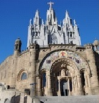
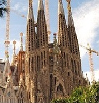
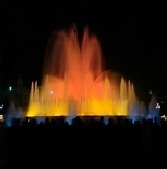
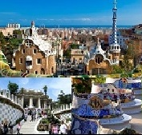
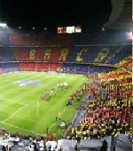
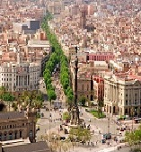

BARCELONA
Co warto zobaczyć w Barcelonie ?
ciekawa stronka| ID | Nazwa | Opis | |
|---|---|---|---|
| 1 |  | Tibidabo | Tibidabo to najwyższe wzgórze położone w okolicy Barcelony. Jest to popularne miejsce wypoczynku, na Tibidado znajdują się nie tylko doskonałe tereny spacerowe, ale też usytuowany jest jeden z najstarszych w Europie parków rozrywki. Tibidabo to także popularny cel wycieczek turystycznych, a to ze względu na wspaniały widok, jaki ze szczytu wzgórza rozciąga się na Barcelonę i wybrzeże Morza Śródziemnego. |
| 2 |  | Sagrada Familia | Świątynia Pokutna Świętej Rodziny – secesyjny kościół w Barcelonie w Katalonii o statusie bazyliki mniejszej, uważany za główne osiągnięcie projektanta Antoniego Gaudíego. |
| 3 |  | Magiczna fontanna | kompleks fontann znajdujący się przy Avenida Maria Cristina w Barcelonie. Fontanna znajduje się u podnóża wzgórza Montjuïc, tuż obok hal targowych Fira de Barcelona oraz Plaça d'Espanya. Została zbudowana w 1929 r. podczas odbywającej się wtedy w Barcelonie Wystawy światowej EXPO. Projektantem fontanny był Carles Buigas. Ogromnych rozmiarów fontanny są zwykle w godzinach wieczornych miejscem widowiskowych spektakli artystycznych: woda - światło - dźwięk. Podczas pokazu w takt muzyki, z setek dysz fontanny wydobywają się strumienie wody o zmiennym ciśnieniu, tworząc rozmaite przestrzennie ukształtowane elementy i figury. Odpowiednie grupy strumieni wody wypływającej pod różnymi kątami są podświetlane zmieniającymi się światłami o różnych kolorach. Spektakle odbywają się średnio co pół godziny lub co godzinę. TUTAJ można zobaczyć pokaz |
| 4 |  | Park Güell | Duży ogród z elementami architektonicznymi w Barcelonie. Zaprojektowany przez katalońskiego architekta Antonio Gaudíego na życzenie jego przyjaciela Eusebio Güella. Park jest otoczony murem, zbudowanym z kamieni o nieregularnym kształcie. Znajduje się w nim siedem bram. Nad główną bramą znajdują się dwa medaliony ze słowami "Park" i "Güell", ułożonymi za pomocą mozaiki trencadis - kawałków potłuczonych, ceramicznych płytek. Park składa się z wielu fragmentów zieleni, pociętych systemami krętych ścieżek, mostków i ciągami schodów. |
| 5 |  | Camp Nou | Camp Nou – stadion piłkarski w Barcelonie w Hiszpanii, na którym są rozgrywane mecze klubu FC Barcelona. Jego trybuny mieszczą 99 354 osób, czyniąc go największym piłkarskim stadionem w Europie i drugim na świecie zaraz po Estadio Azteca w Meksyku. |
| 6 |  | La Rambla | słynna, ruchliwa ulica w centrum Barcelony, popularna zarówno wśród turystów, jak i miejscowych. Ten kilometrowej długości deptak w dzielnicy Barri Gòtic prowadzi od Plaça de Catalunya w centrum do pomnika Krzysztofa Kolumba na nabrzeżu. Zazwyczaj pełen jest ulicznych przedstawień, straganów i kawiarenek na wolnym powietrzu. La Rambla kipi życiem przez całą dobę |